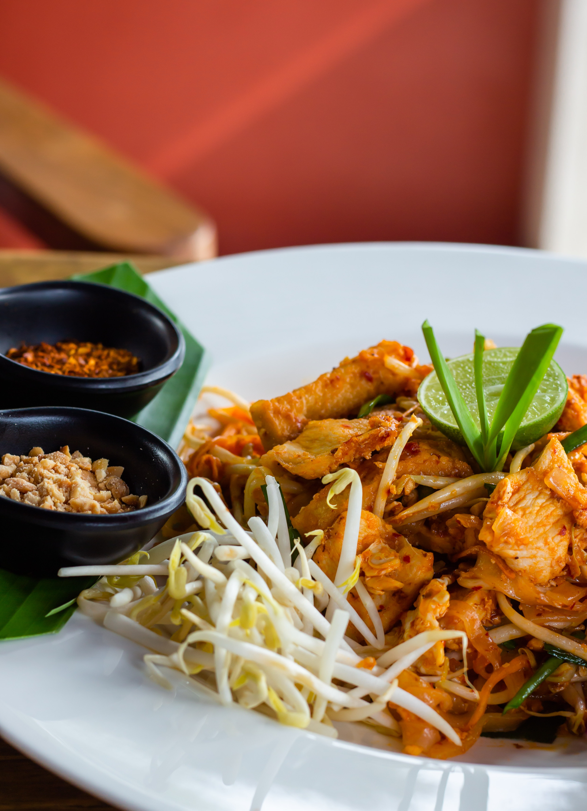

Pad Thai

Description
This is an authentic pad thai recipe with rice noodles, chicken, peanuts,
and stir-fried eggs in a traditional tamarind sauce. Garnish with fresh bean
spouts and chives. This recipe was inspired by the pad thai at Thai Tom.
Ingredients:
-
12 ounces dried rice noodles
-
½ cup white sugar
-
½ cup distilled white vinegar
-
¼ cup fish sauce
-
2 tablespoons tamarind paste
-
2 tablespoons vegetable oil, divided
-
2 boneless, skinless chicken breast halves,
sliced into thin strips
-
1 ½ teaspoons garlic, minced
-
4 large eggs, beaten
-
1 ½ tablespoons white sugar
-
1 ½ teaspoons salt
-
1 cup coarsely ground peanuts
-
2 cups bean sprouts
-
½ cup chopped fresh chives
-
1 tablespoon paprika, or to taste
-
1 medium lime, cut into wedges
How To Make Pad Thai Step By Step
-
Place rice noodles into a large bowl and cover with several inches of room temperature water;
let soak for 30 to 60 minutes. Drain.
-
Whisk 1/2 cup sugar, vinegar, fish sauce, and tamarind paste together in a saucepan over medium heat.
Bring to a simmer, then remove from the heat.
-
Heat 1 tablespoon oil in a skillet over medium-high heat. Add chicken; cook and stir until chicken
is no longer pink in the center and the juices run clear, 5 to 7 minutes. Remove from the heat.
-
Heat remaining 1 tablespoon oil in a large skillet or wok over medium-high heat. Add garlic and cook
until fragrant, about 1 minute. Stir in eggs; scramble until eggs are nearly cooked through, about 2 minutes.
Add chicken and rice noodles and stir until well combined.
-
Stir in tamarind mixture, 1 1/2 tablespoons sugar, and salt; cook until noodles are tender, 3 to 5 minutes.
Stir in peanuts and cook until heated through, 1 to 2 minutes. Garnish with bean sprouts, chives, and paprika;
serve with lime wedges.